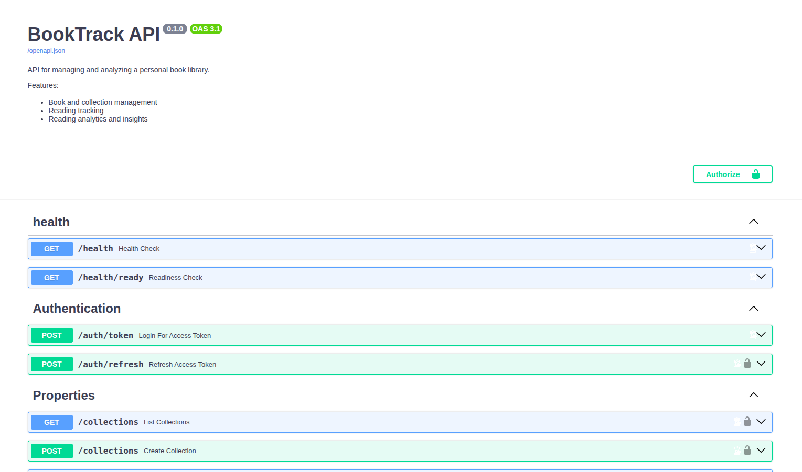
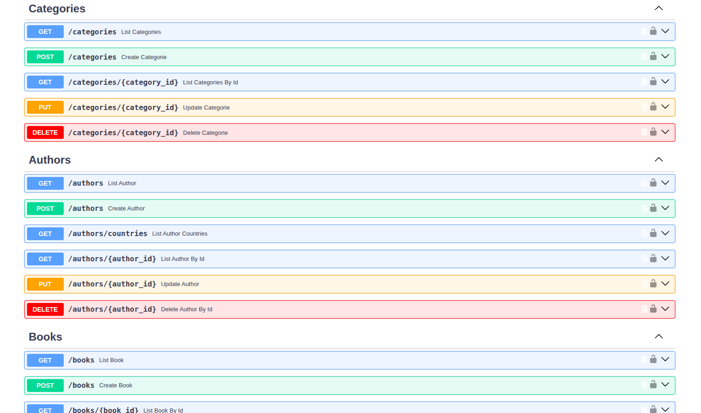

Contexto
Projeto de estudo prático que foi além de um CRUD simples: uma API para gerenciar biblioteca pessoal, acompanhar progresso de leitura, importar coleções via CSV e gerar análises por gênero, autor e status de leitura - com uma view pública limitada, para que terceiros explorem parte do acervo com segurança. A modelagem de dados segue Star Schema, unindo engenharia de dados com boas práticas de API REST.
Arquitetura
Toda requisição passa pela camada de middleware (autenticação JWT + RBAC) antes de chegar na camada de negócio (Service → Repository). O Redis já está desenhado na arquitetura como camada de cache e rate limiting, mas ainda não foi implementado - por isso aparece tracejado no diagrama.
Capturas


Fluxo de autenticação e consumo
Diagrama de sequência simplificado do login (com rate limit) e da consulta autenticada - as duas rotas mais representativas do funcionamento da API.
Modelagem de dados - Star Schema
Duas tabelas de fato - BOOKS (o acervo) e READINGS (cada leitura, com progresso e avaliação) - cercadas de dimensões. CATEGORIES é hierárquica (auto-relacionamento), e READINGS se conecta a TAGS e SHELVES em relações muitos-para-muitos.
erDiagram
USERS {
int id PK
varchar username UK
varchar email UK
varchar password
varchar role "admin/viewer"
datetime created_at
datetime updated_at
}
AUTHORS {
int id PK
varchar name
varchar gender "M/F"
varchar country_of_origin
}
PUBLISHERS {
int id PK
varchar name UK
}
COLLECTIONS {
int id PK
varchar name
}
SHELVES {
int id PK
varchar name UK
}
FORMATS {
int id PK
varchar name UK
}
READING_STATUS {
int id PK
varchar name UK
}
TAGS {
int id PK
varchar name UK
}
CATEGORIES {
int id PK
varchar name
int parent_id FK "NULL = root category"
}
BOOKS {
int id PK
int publisher_id FK
int collection_id FK
int format_id FK
int category_id FK
int author_id FK
varchar title
int original_publication_year
int total_pages
text cover_url
text synopsis
}
READINGS {
int id PK
int book_id FK
int status_id FK
datetime updated_at
date start_date
date end_date
int pages_read
varchar personal_goal
date club_date
varchar club_name
text review
int rating
}
READING_QUOTES {
int id PK
int reading_id FK
text content
int page_number
datetime created_at
}
PUBLISHERS ||--o{ BOOKS : "publishes"
COLLECTIONS ||--o{ BOOKS : "contains"
FORMATS ||--o{ BOOKS : "has"
AUTHORS ||--o{ BOOKS : "written by"
CATEGORIES ||--o{ BOOKS : "classified as"
CATEGORIES }o--o{ CATEGORIES : "sub-category of"
BOOKS ||--o{ READINGS : "has readings"
READING_STATUS ||--o{ READINGS : "defines"
READINGS }o--o{ TAGS : "tagged with"
READINGS }o--o{ SHELVES : "stored in"
READINGS ||--o{ READING_QUOTES : "has quotes"
classDef fact fill:#3d0f18,stroke:#2a0a11,color:#ffffff
classDef dim fill:#c1596a,stroke:#a84357,color:#ffffff
classDef bridge fill:#9c3245,stroke:#7a2334,color:#ffffff
class BOOKS,READINGS fact
class AUTHORS,PUBLISHERS,COLLECTIONS,FORMATS,CATEGORIES,USERS dim
class READING_STATUS,TAGS,SHELVES,READING_QUOTES bridge
O que foi implementado
- Autenticação JWT com controle de acesso por papel (RBAC: admin/viewer)
- CRUD completo de livros com relacionamentos expandidos (autor, editora, formato, categoria)
- Migrações de banco versionadas com Alembic
- Containerização completa com Docker